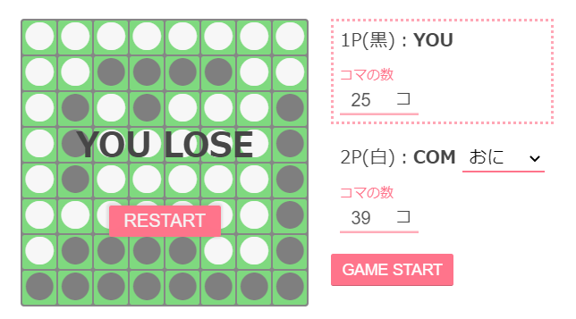

おまけコーナー
トップに戻る目次
マインスイーパ
自作マインスイーパです。デザインとかは大目に見てやって下さい。
基本ルール
爆弾以外のマスを全て開けるとゲームクリア
逆に一つでも爆弾のマスを開けるとゲームオーバー
マスに書かれた数字はそのマスの周囲8マスの内いくつ爆弾が入っているのかを示す
基本操作
左クリック：マスを開く
右クリック：旗を立てるor消す
ダブルクリック：（マスの数字と周囲の爆弾の数が同じ時に）周囲の開いていないマスを全て開く
CLEAR!
GAME OVER!
リバーシ
コンピューターと対戦できるリバーシ
敵の強さを設定できるのがこだわり
基本ルール
黒と白それぞれ2つずつ中央の4マスに交互に置かれている状態からスタート
黒が先攻で、もともと置いてある自分のコマと自分が置いたコマで相手のコマを挟むと挟んだ相手のコマをひっくり返して自分のコマにできる
相手のコマを挟まない場所には置けず、置ける場所がない時はパスする
最終的に8×8の64マスが埋まった時にコマの数が多い方の勝利
基本操作
小さい丸の部分にしか置けない
自分の手番に小さい丸をクリックするとそこにコマを置ける
1P PASS
2P PASS
YOU WIN!
YOU LOSE
DRAW
1P(黒)：YOU
2P(白)：COM
HTML/CSSクイズ
HTMLで見出しに使用するタグは以下のうちどれ？
label
h1
index
header
h1～h6までを見出しとして使用します
背景色を指定するスタイルは以下の内どれ？
bgcolor
background-color
color
color-background
bgcolorはHTML4の属性、colorは文字色を設定するプロパティです
リンクを表示させるHTMLのタグは以下の内どれ？
a
link
href
jump
hrefはaタグの中でリンク先を指定するのに用います
imgタグ(画像)で代替テキストを指定するために用いるプロパティは以下の内どれ？
alt
width
src
text
srcは画像のパスを指定するのに用います
HTML5で書かれたものであるとブラウザに明示する記述は以下のうちどれ？
<!HTML5>
<!DOCTYPE HTML PUBLIC "-//W3C//DTD HTML5>
<!doctype=”HTML5”>
<!DOCTYPE html>
2番目の記述がHTML4に似たもの
HTML5でかなりシンプルになりました
クラス名がhotの要素にスタイルを適用する時に使うセレクタは以下の内どれ？
#hot
&hot
.hot
,hot
#hotはidがhotの要素を指定できます
文字色を指定するスタイルは以下の内どれ？
font-color
text-style
text-color
color
文字に関係するスタイルは紛らわしいものが多いので気を付けよう
要素の回り込みを指定するスタイルは以下の内どれ？
wrap
float
arround
justify-content
float:left;を指定すると要素がすべて左側に回り込む
回り込みをやめる際にはclear:both;を指定する必要がある
個人的にはflexboxとかcss gridを使う方がきれいでいいと思います
フォントの種類を指定するスタイルは以下の内どれ？
font-style
font-family
font-kind
font-property
font-styleはイタリックや打ち消し線などにしたいときに使用します
ブラウザでタブの部分に表示されるテキストを指定するHTMLのタグは以下の内どれ？
tab
label
head
title
<link rel="icon" href="img/favicon.png" type="image/png">の様に記述することでファビコンと呼ばれるタイトルの横に表示されるアイコンを指定することもできます
HTMLでコメントをつける場合の構文は以下のうちどれ？
<!-- コメント -->
<comment> コメント </comment>
<=! コメント=>
<!> コメント </!>
複数行コメントも可能です
HTMLで表を作成する際に使用するタグは以下の内どれ？
list
table
tb
form
列はtr、見出し部分はth、中身の要素はtdを用います
要素の周りの枠線を指定するスタイルは以下の内どれ？
grid
line
border
frame
paddingもmarginも余白を指定するがpaddingはborderの内側、marginはborderの外側という違いがある
テキストにルビを振る際に使用するHTMLのタグは以下の内どれ？
span
sub
rb
ruby
subは文字を下付きにする際に使用するタグです
JavaScriptを書く際に使用するHTMLのタグは以下の内どれ？
script
js
link
import
<script src="main.js" />の様に記述することで外部のjsファイルを読み込むこともできます
リストを作る際に使用するHTMLのタグは以下の内どれ？
list
ul
contents
pl
list-style:none;を適用するとリストの横の黒丸を削除できます
次のようなフォルダ構造の時にindex.htmlからsample.jpgを指定するには以下の内どれを用いればよいか？
├ sample.jpg
└ html/
└ index.html
../sample.jpg
*/sample.jpg
./sample.jpg
//sample.jpg
2階層上のファイルを指定したい場合は../../sample.jpgの様に記述します
HTMLは以下の内どれの略称か？
High Technology Making Language
Hyper Text Markup Language
Highly Transparent Major Language
Hashed Table Modifying Language
CSSを外部から読み込む際に使用するHTMLのタグは以下の内どれ？
css
style
stylesheet
link
styleはHTML内にスタイルを記述する際に使用するタグです
<link rel="stylesheet" href="style.css">の用に記述します
レスポンシブデザインにする際、スマホなどの小さい画面で見た際にだけスタイルを適用するときに使用するスタイルは以下の内どれ？
@media
@responsive
@breakpoint
@query
@media screen and {max-width:480px} { スマホ用のCSS }の様に記述します
リザルト
正解数 0 / 0
過去作
過去に作った作品群を紹介
ここに書いたもの以外にもいろいろ作ってるのだが、細かいのも多いので抜粋して紹介
過去についてはこちらから見れます
PIXEL -Made with HSP-
中3の5月～9月にかけて開発したシューティングゲーム
その年の文化祭にも展示してそれなりに賑わった
製作時間は300～400時間ぐらい
Twins -Made with HSP-
PIXELを作った直後に作ったら、思ったより開発が進んで11月末締め切りのHSPプログラミングコンテストに応募した結果入賞したという作品です
製作時間は100時間ぐらい
自分の作るゲームはことごとく難易度が高いのをどうにかしたいと思いました
マインスイーパ -Made with JavaScript-
JavaScriptで作ってみた単純なゲーム
製作時間は20時間程度
一番時間かかったのはデザイン
リバーシ -Made with JavaScript-
またまたJavaScriptで作ってみたゲーム
COMのプログラムを考えるのが結構難しくて30～40時間ぐらいかかってしまった
全探索という効率の悪さNo.1の方法を使っているので相手の手番が遅いという問題点があるのだが技術力不足で直せなかったのが残念
ピクトグラム
「ここではマスクを着用してください」的な意味合いのピクトグラム
画像のセンスが圧倒的に欠けているので雑ですが心の瞳で見てください

あとがき
最初に1ページだけサイトを作ってどうしようか困ったから結果複数ページ作るために対応したという経緯で生まれたこのサイト
無駄に時間をかけすぎている気がするがそこそこ完成度の高いサイトになったのではないかと思う
中でもメインのページはページ遷移の部分以外にJSを使っていないのがどうでもいいこだわりポイント
しかし画像製作センスが欠けていることが少し微妙だったなと思う
レスポンシブ対応も一応頑張ったのだが、実機で動作させると動かないということが起こりレスポンシブデザインの難しさを実感した
こんなサイトの一番奥まで読んでくださった方、ありがとうございました